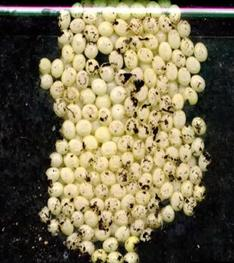
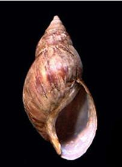

Snails (Giant East African Snail)
Snails (Giant East African Snail)
{kind=link}
{kind=link}
{kind=link}
{kind=link}
Achatina fulica
Pulmonata: Achatinidae
East African Land Snail; Giant East African Snail; Giant African Land Snail
Swahili: Konokono; Kiluya: Likhorionio; Kikuyu: Dinoho; Kikamba: Inonga; Luo: Komunio
Lettuce, Sunflowers, Breadfruit, Brinjal, Cauliflower, Marigold, Rubber and most varieties of cucurbits
Geographical Distribution in Africa
Geographical Distribution of the African armyworm in Africa (red marked)
Giant East African Snail is native to East Africa, especially Kenya and Tanzania. It has been introduced to many countries both deliberately as pets and accidentally and has become serious pests. In Africa, it is now widespread in southern Ethiopia, southern Somalia, northern Mozambique, Madagascar, Mauritius, Seychelles, Morocco, and in Ghana and Ivory Coast in West Africa. However, the species is presently also widely established in Asia, Pacific and Indian Ocean...
General information on pest and damage
Introduction
 |
| The Giant East African Snail (Achatina fulica). Adults of the species may exceed 20 cm in shell length but generally average about 5 to 10 cm |
| (c) Ahoerstemeier, www.wikipedia.org
|
Damage
|  |
| Eggs of Achatina fulica |
| (c) Yuri Yashin, achatina.ru, Bugwood.org
|
Giant East African Snail is a major agricultural pest, feeding on a variety of crops and causing significant economic losses. In the US state of Florida it has been estimated that Giant East African Snail would have caused an annual loss of $US 11 million in 1969 if its population had not been controlled. In India it attained serious pest status, particularly in 1946/47, when it appeared in epidemic proportions in Orissa and caused severe damage to vegetable crops and rice paddies. Plants most likely damaged by the snail are garden flowers and ornamentals, vegetables, (especially Cruciferae, Cucurbitaceae and Leguminosae) and immature specimens of breadfruit, cassava and teak wood. Giant East Aftrican Snail may also increase the spread of plant diseases (for example, black pod disease of cocoa caused by Phytophthora palmivora), which it spreads in its faeces.
Host range
Symptoms
External feeding on foliage and fruits
Affected plant stages
Seedling stage, vegetative stage and fruiting stage
Affected plant parts
Leaves and fruits
Symptoms by affected plant parts
External feeding on foliage and fruits
Biology and Ecology of the Giant East African Snail
Life cycle
| 
|
| Shell of the Giant African Snail (Achatina fulica) |
| (c) Luis Ruiz Berti, www.wikipedia.org
|
Pest and disease Management
Pest and disease Management: General illustration of the concept of Infonet-biovision

This illustration shows the methods promoted on infonet-biovision. The methods shown at the top have a long-term effect, while methods shown at the bottom have a short-term effect. In organic farming systems, methods with a long-term effect are the basis of crop production and should be of preference. On the other hand methods with a short-term effect should be used in emergencies only. On infonet we do not promote synthetic pesticides.
Further below you find concrete preventive and curative methods against Snails.
Cultural practices
- Practise good field sanitation.
- Monitor regularly for the pest in the nursery and in the field.
- In East Africa, sprinkling their habitats and / or around crop base with table salt in dry seasons, has proven effective in their control.
- Brewers' waste in water containers is effective trap. They are attracted by the yeast and they get drowned when going for the 'brew'.
Habitat Management
Areas of natural habitat
Biological pest control
Natural enemies:
Predators:
- Euglandina rosea, attacking adults
- Eupelmus australiensis, attacking adults
- Gecarcoidea natalis, attacking adults
- Gonaxis quadrilateralis, attacking adults
- Lamprophorus, attacking adults
- Platydemus manokwari, attacking adults
- Solenopsis geminata, attacking adults
Biopesticides and physical methods
Biopesticides
- Metal salt-based molluscicides as snail baits and snail pellets. These are derived from iron phosphate, copper sulphate and aluminium sulphate. They are not toxic to humans and animals (In organic culture, consult your certification body before use)
- Sluggo Plus(r) is a blend of iron phosphate and Spinosad. The latter is derived from naturally occurring soil dwelling bacteria. This product is not commercially available in East Africa (In organic culture, consult your certification body before use)
Physical methods
- International quarantine and surveillance activities.
- Hand collection (in some countries they constitute a food source and even exported as a food delicacy to Europe. Also in some European countries snails are kept as pets).
- Food baits (e.g. over-ripe papaya fruit pieces). However, these baits should be daily removed from orchards and destroyed.
Information Source Links
- CABI. (2005). Crop Protection Compendium, 2005 Edition. (c) CAB International Publishing. www.cabi.org
- OISAT: Organisation for Non-Chemical Pest Management in the Tropics. www.oisat.org
- Mead, A. R. (1979). Pulmonates Volume 2B. Economic malacology with particular reference to Achatina fulica. London, Academic Press.
- Mead, A. R. (1961). The giant African snail: a problem in economic malacology. Chicago, University of Chicago Press.
- www.wikipedia.org
- www.pest.ceris.purdue.edu
- www.issg.org
- www.invasive.org
- www.outsidepride.com
Last updated on:
| Unless otherwise stated, all content on the Infonet Biovision Website is licensed under a Creative Commons License | Disclaimer |